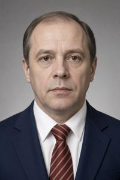
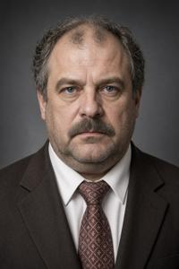
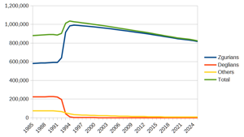

Zgurian Republic


Zgurian Republic (Zgurian and Deglian: Zgurska Republyka; abbreviated ZR; informally Zguria) is one of the two unrecognized de facto states on the territory of Former Upper Pannonia. It took shape as a political entity during the Upper Pannonian civil war in 1992–1993 and was formally proclaimed on 29 November 1994. It maintains no formal diplomatic relations with any country, appears in international documents as the “Zgurian zone”, and deals with the outside world officially only through the United Nations Observer Mission for Former Upper Pannonia. Recognition is blocked by the absence of a peace treaty with the other party to the conflict, the Deglian Republic; fighting between them ended in 1995 with the signing of the Lausanne Agreements, but the disputed questions remain unsettled and the two sides' positions are as incompatible as ever.
History overview
The assassination of Queen Ljudmila on 17 September 1994 and the collapse of the ceasefire that followed put an end to any hope of restoring a single Pannonian state. With the war under way again, a congress of Zgurian deputies met in North Vronovica in November 1994, declared itself the Legislative Assembly, and on 29 November proclaimed the independence of the Zgurian Republic. The Lausanne Agreements of 1995 were concluded between representatives of the Zgurian and Deglian republics as independent states, although neither had recognized the other diplomatically. On 14 January 1996 Zgurian citizens voted in a referendum on the ZR constitution; it passed with 68 percent in favour and remains in force to this day, though much amended. That same year parliament elected the writer and former dissident Ljubodar Vloszek the republic's first president.
The early postwar years still belonged to the senior field commanders. Their armies had been formally disbanded, but they kept large followings of armed men and had no scruples about imposing their politics by force. Armed score-settling, political killings and abductions, the storming of government offices were all commonplace. The war was receding, however, society wanted a return to normality, and the civilian bureaucracy gained ground step by step, taking over the flow of money and building security structures that answered to it. Between 1997 and 1999 several of the more colourful commanders fell victim to unsolved murders, officially written off to “Deglian terrorists”, and the less colourful ones drew their conclusions and set about fitting into the new order. The Zgurian Republic declared its cooperation with the International Tribunal for Former Upper Pannonia in The Hague and handed over several mid-ranking war criminals. One of the most senior commanders, General Borislav Klycz, surrendered to The Hague of his own accord, was acquitted in 2000 “for want of testimony”, returned to Zguria in triumph, and in 2001, after the death of Vloszek, was elected the republic's second president.
The 1996 constitution gave the prime minister far greater powers. In 2001 the post went to Radko Bartolov, Vloszek's nephew and his successor as leader of the ruling party, the Zgurian Democratic Union (Zgurski demokratycki suvowz, ZDS). Bartolov built up his position considerably and by degrees established a regime that bordered on the authoritarian. At the parliamentary elections of October 2011 the ZDS was officially announced to have taken an absolute majority once again. Evidence of systematic falsification set off mass protests in Vronovica, on a scale that alarmed the authorities into ordering a recount. The ZDS lost its majority as a result, and Bartolov was forced to give up the premiership. There followed a period of coalition government, marked by unbroken political crises and unsuccessful attempts at reform. In 2016 the ZDS won its majority back, and has not lost it since.
Government and politics
Parliament
Under the 1996 constitution, the ZR is a unitary parliamentary republic. Its single-chamber parliament, the Zgurian Legislative Assembly (Zgursko Zakonodarno Zgromadjenje), has 64 members. Elections are held every five years in October. The sixth and current convocation (as of September 2026) was elected in October 2022, a year later than scheduled because of the COVID-19 pandemic. The details of the electoral system change from one campaign to the next, as do constituency boundaries, drawn at will to suit the ruling ZDS. The Electoral Law of 2022 is currently in force: the country is divided into 64 constituencies, each returning a single member, and every candidate must come from a party list — independent candidacies are not allowed. There is no national list, an arrangement that favours the ruling party, which at present has no figures of nationwide popularity but holds firm positions in the localities. In the current Assembly the ZDS holds 45 seats (70 percent).
President
{kind=link}

The president is elected by parliament for a term of eight years, from candidates nominated by its factions; a second term is not permitted. The president is the formal head of state and supreme commander of the armed forces, but has no real powers except in one situation: if parliament fails to form a government within three months. The president may then either appoint a prime minister single-handedly, who goes on to form a cabinet, or dissolve parliament and call new elections. Such a crisis has occurred once in the republic's history, after the scandalous elections of 2011. The office is currently held by Alois Xrozsicki, elected the republic's fifth president in 2025.
[insert translation]
Prime minister and cabinet
{kind=link}

A newly elected parliament chooses a prime minister, normally the leader of the majority faction. The prime minister then assembles a cabinet and has it confirmed by parliament as a single slate. The office carries an enormous range of powers, and its holder is the de facto head of state. There are no term limits. Parliamentary oversight of the government is minimal, and a vote of no confidence in either the prime minister or the cabinet is technically very hard to bring; conversely, the prime minister, as leader of the majority, exercises considerable control over parliament and can usually push through any legislation the government wants. This has led political scientists to describe the ZR as a super-premier republic rather than a parliamentary one, with many of the marks of an authoritarian regime.
The system did not arrive fully formed. The first two prime ministers, Milan Jezsek (1996–1998) and Vaclav Szarojanov (1998-2001), were fairly weak figures. Power was consolidated only under Bartolov (2001–2012), by way of intrigue of every description, manipulation of the law, and outright corruption. Forced out after the protests of the winter of 2011–2012, Bartolov handed the office to a “technical” prime minister, Zlotan Skrut, at first an obedient puppet, who over the years gathered political weight and won a free hand. Skrut is now serving a fourth term as prime minister, is the unchallenged leader of the ZDS, and holds the levers of power firmly, having pushed aside the appointees of Bartolov (who died in 2024).
Parties
The country has dozens of political parties, but power has rested almost without interruption with the ZDS since 1996, and its weight is out of all proportion to that of any rival. The party system of the ZR is accordingly described as a one-and-a-half-party system, or even a 110-percent-party one. The ZDS monopoly was shaken only once, between 2012 and 2016, when the party had to govern in coalition with the socialists.
The Zgurian Democratic Union was formed in 1992 out of the merger of several national-liberal and moderately nationalist parties. The leading role in the alliance belonged to the former Pannonian Party of Democratic Renewal under Ljubodar Vloszek. Elected president in 1996, Vloszek packed the party with his numerous relatives, who went on to occupy high office in the state. Bartolov was Ljubodar's nephew; the current prime minister, Skrut, is the son of his cousin; Ljubodar's own son Rosczislav is today foreign minister; and another nephew, Adam, has served as mayor of Vronovica for a quarter of a century. To accusations of nepotism the Vloszek clan members use to reply with references to “genetic predisposition” and “a hereditary talent for public service”.
The ZDS presents itself as a centre-right, pro-European party. It is opposed on the left by the Zgurian Socialist Party (Zgurska socialystycka partya, ZSP), one of the splinters of the Communist Party of Upper Pannonia, and on the right by the nationalist Our Country (Nasz kraj, NK). Both normally reach parliament, taking individual constituencies on the strength of a popular local figure or by tacit arrangement with the ZDS. Others, such as the Greens (Zeleny) and the left-liberal Young Zguria (Mloda Zguria), are generally absent from the national level but hold seats in local government. All these opposition parties are quite as given to family politics as the ZDS, and leadership passed down within a family is typical.
The judiciary
Under the 1996 constitution the courts are formally independent, and judges are appointed for life by secret ballot of judicial collegia. In practice appointment and removal alike are controlled by the Ministry of Justice through the procedures of “qualification” and “disqualification”. Judges too independent in their rulings do not remain long on the bench, and in cases with high political or economic stakes the outcome is as a rule dictated behind the scenes by the government.
Regional and local government
The country is divided into nine counties (ujezd) and the capital, Vronovica (which in practice takes in only the Third and Fourth districts). A county is run by a head appointed by the prime minister. Counties are subdivided into municipalities (towns) and rural districts, and these, unlike the counties, do have elected bodies of self-government in the form of town or village councils. Vronovica too has an elected city council, as well as a mayor chosen by universal suffrage.
| No. | Territorial unit | Population (2025) | Number of constituencies (2026) |
|---|---|---|---|
| 1 | Vronovica | 371,005 | 29 |
| 2 | Novokopy | 175,189 | 14 |
| 3 | Czelenica | 94,511 | 7 |
| 4 | Balnosz | 61,781 | 5 |
| 5 | Szamenik | 54,428 | 4 |
| 6 | Visztica | 19,089 | 1 |
| 7 | Gnilovody | 14,568 | 1 |
| 8 | Skorczin | 13,438 | 1 |
| 9 | Komarovica | 10,859 | 1 |
| 10 | Grezdenj | 8,482 | 1 |
The role of the UN Mission
The parties to the Lausanne Agreements undertook to avoid settling disputes by force and to observe human rights, and the UN Observer Mission (UNOMFUP) was given the right to monitor compliance. Under that mandate UNOMFUP observers are present in every organ of the Zgurian state, collect information and publish reports, but do not intervene directly in the workings of the state apparatus. Officially the mission holds no authority on Zgurian territory. Its actual influence, however, as the operator of international financial aid and the intermediary in all dealings abroad, is considerable, and no decision of political importance is said to be taken by the Zgurian government without consultations with the Neutral Zone.
Foreign policy
The Zgurian Republic is recognized by no one except Transnistria and Tuvalu. It is not a member of the UN or any other international organization, and conducts its official dealings with other countries solely through UNOMFUP. None of this stops it from keeping a Ministry of Foreign Affairs of its own, which regularly issues public statements on international affairs. The ruling ZDS has a pro-European platform: it professes cooperation with the EU and NATO and promises to join both after the country signs a peace treaty with the Deglian Republic, opening the way to formal recognition. In 1999 the ZR endorsed the NATO operation against Yugoslavia. In October 2001, at the height of the parliamentary campaign, Bartolov publicly offered to back the Americans in Afghanistan with a Zgurian contingent in exchange for diplomatic recognition; the United States never replied. In 2022 the ZR condemned the Russian invasion of Ukraine, imposed sanctions on Russia, and announced its readiness to take in Ukrainian refugees — an offer few took up.
Demography
{kind=link}

The officially registered population of the ZR in 2025 stood at 823,350, of whom 99 percent were ethnic Zgurians. The count turned up 64 Deglians and 7,138 people of all other nationalities: Roma, Hungarians, Germans, Jews, South Slavic peoples and others. The contrast with the census of 1985 is stark: Zgurians then accounted for 66 percent, Deglians for 25 and everyone else for 9.
[insert translation]
The composition of the population shifted most sharply during the civil war (1992–1995), when almost all Deglians left for the Deglian zone and the Zgurians living there moved the other way. Zgurians being the more numerous, the exchange added some 100,000 to the republic's total and left Vronovica badly overcrowded: the flats abandoned by Deglians did not go round, and the capital acquired a fringe of refugee camps that gradually hardened into unserviced neighbourhoods. The population has been shrinking ever since, by an average of 7,000 a year, through emigration, a falling birth rate and a death rate growing due to population ageing.
Economy
The economy is in permanent depression, with GDP per capita hovering around 3,000 euros for the past decade — the lowest figure in Europe. The communists built a fairly powerful industrial base in Upper Pannonia, but it worked mainly for the military-industrial complex, which ceased to exist after 1989, and it lay in the south of the country in any case, in what is now the Deglian zone. Zgurian territory ran to farming and extraction: oil at Czelenica and Balnosz, coal at Szamenik and Novokopy. Those industries are now in decline. Agriculture covers domestic needs alone, and not even those in full: about 30 percent of the food the country requires is imported. Coal and oil output peaked back in the 1970s; the deposits are largely worked out, nothing is exported, and high production costs make the industry a loss-maker. In 2016, on the eve of the elections, the government solemnly announced the discovery of a “gigantic” shale oil field in Grezdenj county and even managed to attract foreign investment, but nothing came of the expectations and the project was quietly wound up after 2020.
In its search for foreign investors the government advertises Zguria as a country with exceptionally cheap labour, which is true enough. High unemployment and the absence of genuinely independent trade unions hold the average wage at 250–300 euros a month. The quality of that labour matches the price: the best workers emigrate to the wealthier parts of Europe, and those who stay are noted neither for their skills, nor their discipline, nor their sobriety.
The main obstacles to economic development are institutional: the lack of diplomatic recognition, corruption, and a weak rule of law. In terms of international law the whole of Former Upper Pannonia is a grey zone. There is no recognized mechanism for settling business disputes, which leaves foreign investment in the country defenceless against the greed of the local authorities and the courts they control. Local business is more exposed still: it can operate only by handing a solid share of its profits to “patrons” in the corrupt bureaucracy, and has nothing left over to grow on.
Finance
In the weak Zgurian economy external inflows count for a great deal: remittances from labour migrants (150,000–200,000 people, estimated at 400–500 million euros a year) and direct EU subsidies of some 150 million a year — as one European official privately put it, “we pay to keep the place from falling apart altogether”.
The country's own currency, the Zgurian zlotnik, was introduced in 1997 to replace the German marks and wartime coupons that had circulated until then. It is issued by the Zgurian Bank of Issue, formally independent and in practice an arm of the Ministry of Finance, whose main business is covering the budget deficit with the printing press. Official inflation runs at about 9 percent a year; UNOMFUP puts the real figure two or three times higher. The zlotnik circulates alongside the euro and has been driven out of every transaction of any size: public-sector wages, pensions, utility bills, taxes and fines are paid in zlotniks, while rent, large purchases and bribes are paid in euros. The official rate has stood at 50 zlotniks to the euro since 2019, but currency at that rate is sold only by the bank and only against documented need; the rate that counts is the street dealers', which moves between 120 and 160.
The republic's annual budget comes to the equivalent of some 700 million euros. Excise on fuel, tobacco and alcohol brings in roughly a third of revenue, and EU subsidies together with earmarked payments routed through UNOMFUP about a quarter. IMF and World Bank loans are out of reach: an unrecognized state cannot be a member of either, and no clearing system would touch bonds from an unrecognized issuer, so demand for them is nil by definition. The government therefore borrows at home alone, issuing short-term treasury bills in zlotniks at 20–25 percent; these are taken up by Zgurian banks, insurance companies and state enterprises, mostly not for gain but on instructions from above. Twice, in 2009 and in 2020, redemption was put off “until stabilization” and ended in an exchange for new paper of longer maturity.
Human and civil rights
International human rights organizations, relying on the annual reports of UNOMFUP, usually classify the ZR as a flawed democracy or a hybrid regime. Formally and institutionally, human and civil rights face no restrictions, but rampant corruption and an undemocratic political culture do much to keep them from being exercised.
The 1996 constitution declared the ZR “the national state of the Zgurian people” while also proclaiming the equality of citizens regardless of ethnic origin. On paper, the rights of ethnic minorities, Deglians included, have never been restricted. The authorities never tire of stating publicly that Deglians have nothing to fear in Zguria, and they urge Deglian refugees and their descendants to come back. Bartolov's second cabinet (2006–2011) even tried paying subsidies to returning Deglians, but quickly and quietly dropped the scheme. As Zgurian officials explained off the record, the money went less to Deglians than to Roma from the Deglian zone, many of whom registered under several different names and so collected the subsidy several times over.
In reality, the Deglian population of the ZR numbers fewer than a hundred people and is steadily shrinking. Most of them are spouses in mixed marriages with Zgurians, and their children almost invariably consider themselves Zgurian. Deglian refugees are not coming back either, bar a handful of exceptions, which the official media cover with relish as proof that the government's policy has been a complete success. Since the civil war the country has had no Deglian organizations or Deglian media, and Deglians are absent from government bodies — again, save for a few token exceptions. The cause is not state discrimination but the intolerance of Zgurian society itself. In a 2023 poll, 83 percent of ZR citizens said they would flatly refuse to have a Deglian as a neighbour, colleague or business partner — a marked improvement on 2005, when the figure stood at 96 percent.
Much the same goes for the rights of sexual minorities. Same-sex marriage has no legal recognition, but beyond that there are no formal bans or repression, and the authorities profess complete tolerance. Yet in 2017, when the organizers of the Pride march in the Neutral Zone, where it has long been held under the protection of the UN authorities, proposed extending the route into the Zgurian part of Vronovica, the idea met with fierce opposition. Zgurian conservative activists and sedmak leaders threatened to beat up the marchers, and the threats were not idle. The police said they could not provide adequate security and advised calling the march off. The organizers turned to the spremniks for protection, but they too, for all their tolerance and hostility to the sedmaks, refused — and rudely. The march had to stay inside the Neutral Zone, although no official ban was ever issued.
Corruption
Corruption is generally held to be the gravest problem the country faces, and the chief obstacle both to the exercise of citizens' rights and to economic development. On the Corruption Perceptions Index the Zgurian Republic is a permanent fixture at the bottom of Europe, the former Soviet states included (the index is not measured in the Deglian Republic at all). The ruling ZDS acknowledges the problem, and before every election promises two things without fail: a peace treaty with the Deglians and an end to corruption. Special bodies have been set up to that end over the years — the Anti-Corruption Police, the State Agency for Combating Corruption, the Extraordinary Parliamentary Commission for the Investigation of Corruption, the Supreme Government Committee for the Interdepartmental Coordination of the Struggle against Corruption. All of them coexist, with ill-defined and overlapping remits, compete with one another, and are reckoned the most corrupt institutions in the whole of the state apparatus. Anti-corruption efforts by civil society, the independent press and international institutions get no support from the authorities, who on the contrary obstruct them doggedly.
The most serious steps against everyday corruption were taken by Skrut's third cabinet during its reformist period (2016–2019). It pushed through a broad digitalization of public services: a tax return could now be filed or a fine paid through a mobile app, which made routine dealings with officialdom far easier. Paying a parking fine had previously meant standing in two queues, so most people naturally preferred to “settle it on the spot” with the traffic officer. Skrut had still larger reforms of the courts and the police in mind, but the covid crisis and the recession that followed left nothing in the budget for them.
Categories: Countries, Post-Socialist era